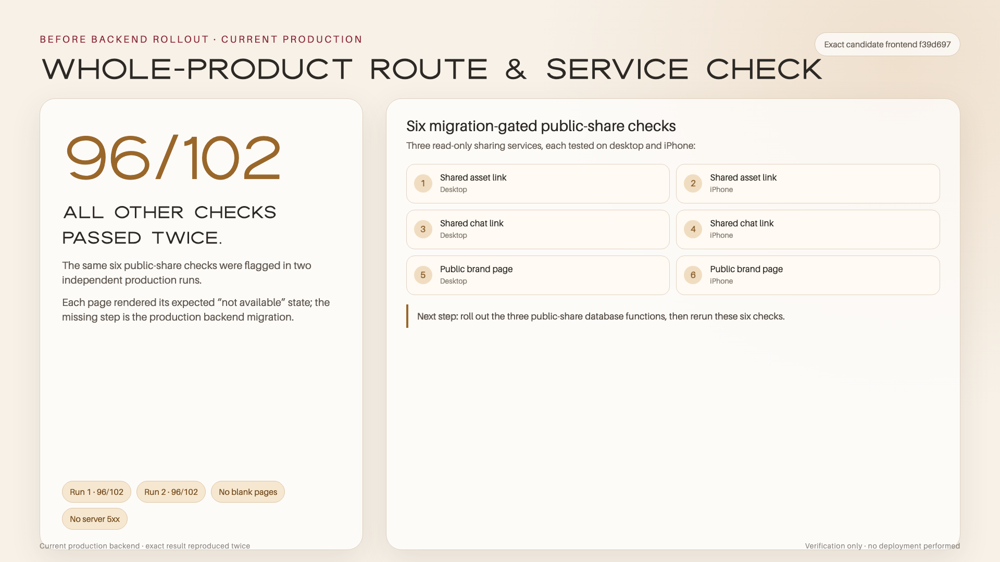
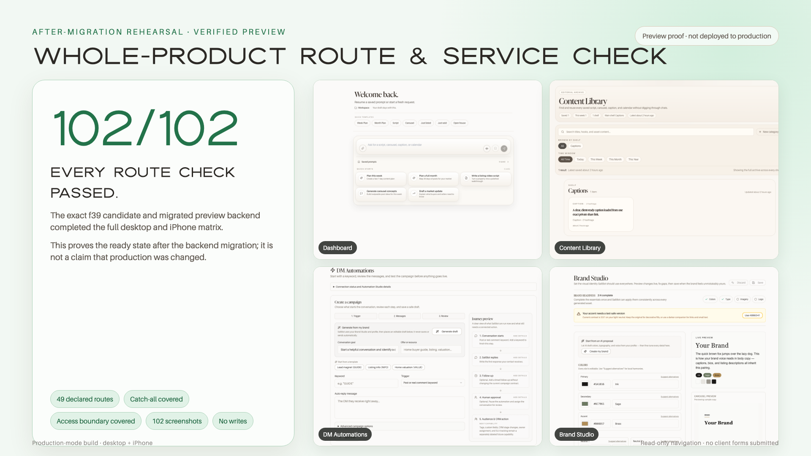

The reported problem was corrected and the member journey reached the expected finish.
SaltBot feedback review
This report is not ready to share yet.
Nothing is presented as finished until every user check and visual record is complete and available on this page.
Open Tina’s original feedbackSaltBot review report
All 52 feedback points, in one clear place.
Every result shown in plain English.
Each issue sits beside its visual record. The whole-product section also separates earlier proof, the current final check, and the steps that still require release approval.
Prepared forTinaSidneyJulian
The review
A complete, plain-English view of the July feedback.
How to read every status
Each label has one clear meaning.
The color tells you how far the member journey went and whether an outside approval or live account was intentionally left untouched.
The reported path was repeated and already behaved correctly in the reviewed version.
Everything inside SaltBot was checked; the next step was stopped because it would change or contact a live account.
The private SaltBot step worked, but the live publishing or release action remains intentionally off.
The larger review is deliberately on hold and is not being presented as completed work.
Latest follow-up
Tina’s 13 newest points, each with a verified result.
Nine corrections completed the full member journey. Three account-connection checks stopped safely before changing a live social account, and the private scheduling check passed but still needs a deliberate release decision before it can affect Salt’s real queue.
Whole-product review
What passed on the final candidate—and what still needs release approval.
This section keeps earlier evidence from being mistaken for proof of the newer combined candidate. Web, iPhone, outside services, and public release each have their own finish line.
Current web and iPhone Simulator candidate
The newest corrections were repeated from a member’s point of view on the exact combined candidate.
- All 297 automated tests passed twice, followed by the production build, type, style, and release-workflow checks.
- The final web build passed 102 of 102 page-and-screen checks against the review backend. Against today’s production backend it passed 96 of 102; only the three new public-share pages at desktop and phone widths are waiting for the matching privacy update.
- The public brand, asset, and conversation pages opened without a signed-in session on desktop and phone-sized screens.
- Brand Studio opened its real public page from the iPhone app in one tap and returned to the same signed-in screen.
- The admin menu opened below the iPhone safe area, stayed within the screen, copied the public SaltBot address, and closed normally.
- Each newly found issue received its own Linear task; one optional member-navigation Share shortcut remains a separate product decision.
What this means today: the review candidate is ready for Tina’s decision. This is Simulator and review-environment proof—not a claim that production or TestFlight has already been updated.
Earlier live and iPhone proof
Ninety-one safe live requests passed across 24 service actions on the reviewed version, followed by 43 deeper checks on the 11 actions most closely tied to Tina’s feedback. A final independent review then passed all 102 account, request, and usage-boundary checks across 18 live service actions. Those counts belong to the earlier reviewed version, not the newer combined candidate.
- The clean first-launch check passed twice on the earlier iPhone review version.
- The weekly request completed on its first submission with seven complete, distinct posts across seven days.
- The saved weekly Calendar, individual day details, and Brand Studio opened correctly.
- The signed-in session remained available after the app moved to the background, fully closed, and reopened.
- Every one of Tina’s 52 points keeps its own issue statement, result, before image, after image, short preview, full video, and Linear task below.
Public web, real providers, and iPhone delivery
Even after the current user check is complete, public release and real-world checks remain separate steps.
- The reviewed update must be approved before the current web candidate is published.
- The automated release service is currently paused by an account billing limit.
- The protected production database password still has to be added before the reviewed privacy update can install safely.
- The release workflow must be changed to stop unless the exact candidate has Tina’s authenticated approval and the required independent reviews.
- Harmless live checks still depend on working outside-service access and available provider capacity.
- Apple signing and App Store Connect still need to be connected for this release, followed by a physical iPhone and TestFlight check.
- Tina’s Approve button records her decision, but it does not yet send the iPhone update to TestFlight or the App Store.
- A backup AI service account needs its balance restored; the working fallback handled the tested request.
- A safe test of the anonymous daily allowance could not target the same anonymous visitor through the public gateway. The allowance is not proven broken, but this one live confirmation remains open.
Connect the exact approval
Prepare the reviewed iPhone build
Restore automated release checks
Connect the protected database release setting
Require the exact approval before release
Connect Apple release access
Restore backup service capacity
Finish the anonymous allowance proof
Decide whether members need a general Share shortcut
Final-candidate visual proof
The newest issues sit directly beside their corrected result.
Every image is shown at full width on the page. The short preview and full recording are immediately underneath, so nothing has to be opened just to see whether a result exists.
Public brand page
Dark brand colors no longer hide the brand story, type, voice, or copy.
Issue
A dark brand palette could make several sections nearly disappear against the public page background.
What changed
SaltBot now chooses readable foreground colors for every public brand section while preserving the client’s palette.
How it was user-tested
The public page was opened on desktop and phone-sized screens with 48 difficult color samples. Every sample passed, and the smallest measured contrast remained comfortably readable.
Result
The brand story, palette labels, typography, voice, and copy kit remain visibly readable from top to bottom.
The lower brand sections were present but almost invisible.

Every section is readable while the Salt Cinema colors remain intact.


iPhone Brand Studio sharing
One tap now opens the real public brand page and returns safely to SaltBot.
Issue
The iPhone app could create an internal app address. Tapping it left the member on the same screen instead of opening the public page.
What changed
Every authenticated sharing action now creates a normal secure SaltBot web address, including Brand Studio, saved assets, conversations, profiles, and the app link.
How it was user-tested
The exact final candidate was rebuilt, installed in Apple’s iPhone 17 Pro Simulator, and opened with a retained signed-in review session. Brand Studio opened the hosted public page in one tap; its palette and typography were reviewed; the browser was closed; and the same Brand Studio screen remained.
Result
The public page opened successfully, displayed the expected brand content, and returned to SaltBot without losing the member’s place.
The earlier one-tap check remained on Brand Studio and did not open a public page.

The hosted public Salt Cinema brand page opens with its readable sections.


Phone-sized admin navigation
The menu is reachable, clears the iPhone notch, and keeps every action on screen.
Issue
Five protected admin pages contained navigation and Share actions, but the page did not provide a visible control to open them. The first correction also needed extra clearance for a notched iPhone.
What changed
Desktop and phone layouts now include a clear menu button, normal close behavior, and spacing that follows the device’s safe area.
How it was user-tested
The exact final page was checked at desktop width and at 390×844 with a simulated 31-pixel iPhone safe area. The menu opened, remained fully inside the screen, copied the public SaltBot address, and closed by Share, Escape, and the backdrop without any horizontal scrolling.
Result
The phone menu starts below the header and notch, all actions remain visible, and the page stays usable at both widths.
The protected page had no visible way to open its navigation and Share actions.

The complete menu is visible below the iPhone safe area.


Service, failure, and recovery boundaries
Expected mistakes stop clearly, retries stay bounded, and no unsafe live action was used as a test.
Issue
Some service checks could miss an unlisted function or count an expected signed-out response as a failure. A stale review setting could stop the test early, and production does not yet have the three new privacy-protected public-share reads.
What changed
The review now discovers every service handler automatically, applies the correct expectation to each one, and uses the same valid public connection identity as the final build. The three public-share reads and their protected migration passed in the review environment and remain held from production until approved.
How it was user-tested
All 43 exact-candidate sign-in, missing-information, not-found, and repeat-request boundaries passed across the 11 services closest to Tina’s feedback. The deployed review environment also passed 102 safe account, request, and usage-boundary checks across 18 service actions whose service source is unchanged in the final candidate. Separately, the exact web build passed 102 of 102 review-backend page checks and 96 of 102 against today’s production backend.
Result
Expected mistakes return controlled guidance instead of an uncontrolled error, repeated work remains bounded, and the review connection now answers normally. The six production-backend page checks that remain are the same three new public-share pages at desktop and phone widths; they are waiting for the protected privacy update and are not being presented as live. Paid outside services, client publishing, and microphone transcription were intentionally not triggered.
All other page checks pass twice; the same three public-share pages at desktop and phone widths are waiting for the database migration.

The exact final candidate passes all 102 checks with the matching migration. This is readiness proof, not a claim that production was changed.


Earlier visual proof
See the earlier completed journeys without opening a separate report.
These images and recordings remain the proof for the earlier reviewed version. They are clearly kept separate from the current candidate replay above.
Listing Launch interrupted-response check
One bundle for one member action—even when the first response is interrupted.
Issue
If the first answer did not reach the page, trying again could accidentally start the same paid work twice.
What changed
SaltBot now reopens the original request after an interrupted response instead of starting it again. A later click still starts a new request.
How it was user-tested
On the published review site, the first answer was deliberately hidden to reproduce an interrupted connection. The page reopened one bundle, and a later click started a separate action. No paid outside service or client data was used.
Result
One visible launch bundle appeared for each intentional member action, with no page errors.
The member is ready to generate the launch bundle.

The interrupted request reopens one complete bundle for the action.


Platform Checker interrupted-response check
An interrupted response now reopens one refined preview.
Issue
If the first Platform Checker answer did not reach the page, trying again could repeat the work instead of reopening the finished result.
What changed
After an interrupted response, SaltBot reopens the same request. Choosing Refresh data later remains a new action.
How it was user-tested
A signed-in member opened Platform Checker on the published review site. The first answer was hidden to reproduce an interrupted connection; one refined preview reopened, and Refresh data remained a separate choice. No paid search, saved content, or client data was changed.
Result
The interrupted request reopened one refined preview, and the later refresh remained separate.
Platform Checker is ready to pull data and refine the content.

The interrupted request returns one refined preview.


Additional safeguard found during the final review
Market Intel now checks the member and usage allowance before research begins.
Issue
A direct Market Intel request could begin research and AI work before confirming that it came from a signed-in member with an available allowance.
What changed
Market Intel now stops unsigned-in requests immediately and confirms one available usage allowance before it starts any research or AI work.
How it was user-tested
A signed-out production request stopped at sign-in without using an allowance. A signed-in synthetic review request then completed with one allowance. The member page was repeated on the published review site with a private review account and synthetic market figures.
Result
The signed-out boundary returned the expected stop, the signed-in request returned a complete report, the allowance advanced exactly once, and all synthetic test records were removed.
Market Intel is ready with synthetic market figures and no client information.

The signed-in request returns a complete balanced-market summary and key metrics.


Earlier iPhone member experience
The earlier reviewed version passed the signed-in member journey and app-return checks.
Issue
The iPhone version needed its own signed-in check so a web result was not mistaken for proof of the mobile app.
What was prepared
The earlier iPhone review version was rebuilt cleanly and installed with release settings. It was then removed and installed again for an independent second first-launch check.
How it was user-tested
Two separate clean uninstall, reinstall, and cold-launch runs each reached the usable sign-in screen without the earlier blank pause. A signed-in review member then opened the Dashboard, submitted the weekly-calendar request once, reviewed all seven saved days and one day’s details, opened Brand Studio, moved the app to the background, returned, fully closed it, and launched it again.
Result
The clean first-launch check passed twice. The weekly request completed on its first submission with seven complete, distinct posts across seven days. Every checked member screen loaded, the session stayed signed in, and the app returned correctly after each lifecycle step.
Earlier release-candidate check
The earlier 1.3.0 Simulator build was rebuilt cleanly and opened after an upgrade.
That earlier candidate installed over the fully reviewed app, reopened the signed-in member experience, and retained the session after a cold relaunch. This record remains visible as earlier proof; the current combined candidate is being checked separately above.
The earlier calendar-recovery build retained the saved weekly Calendar after a full close and relaunch.

The earlier Release candidate reopened the signed-in member experience after the upgrade and cold relaunch.

Earlier full member replay
The calendar and relaunch journey was repeated independently.
That earlier version passed two clean launches, returned a new seven-day calendar without repeating the prior one, and kept the same calendar after the app was fully closed and reopened.
The complete branded sign-in screen appeared without an empty pause.

The same earlier version reached the complete sign-in screen again.


A fresh first launch could pause on an empty screen before sign-in became usable.

The first clean reinstall and cold launch reached the usable sign-in screen without the empty pause.

The same reviewed version passed a second uninstall, reinstall, and cold launch, again reaching the complete sign-in screen without the earlier blank pause.


Jump to any result
All feedback, in Tina’s order.
Select a section or an individual item to move straight to its explanation and visual record.
How each result was checked
One clear standard, with no hidden gaps.
Completed recordings follow the member journey from the reported starting point to the visible finish. Open items name the missing proof, and safeguarded checks show where the review stopped to protect a live client account.
- 01
Repeat the issue
Follow the exact path Tina described and record the starting behavior.
- 02
Make the correction
Update only what is needed to make the complete user experience work.
- 03
Use it like a member
Complete the action from the signed-in SaltBot screen, including reloads when the result must remain saved.
- 04
Show the finish—or name the gap
Place the starting image and final image together. If the final user record is incomplete, say exactly what is missing instead of calling the point done.
Before and after
The issue and its result, side by side.
The images are shown at full useful width. Opening a larger view is optional.
Original feedback
Both source documents stay connected to the work.
Tina’s original review and newest follow-up remain the reference. Every point links to its individual Linear task and its own permanent section on this page.
Who this report is for
This review was prepared for Tina, Sidney, and Julian so the reported issue, completed check, and visual result can be reviewed together without technical notes.